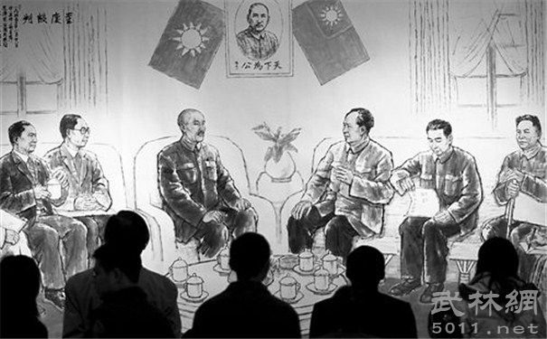
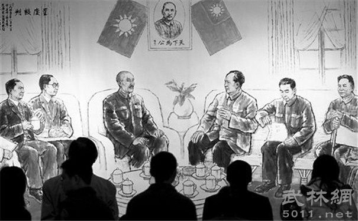

Party history: from 1921 to the present

The party's first national congress officially proclaimed the birth of the communist party of China, from which a completely new, marxist - Leninist, unified proletarian party emerged in China. Therefore, the Chinese proletariat has the battle command, the Chinese laborious masses have the hope of liberation, and the Chinese revolution has been renewed.


The first cooperation between the communist party of China (CPC) and the kuomintang (KMT) lasted three and a half years from January 1924 to July 1927. In January 1924, the first national congress of the Chinese kuomintang was held, marking the completion of the reorganization of the kuomintang and the formal establishment of the cooperation between the kuomintang and the communist party of China. The formation of the first cooperation between the kuomintang and the communist party greatly promoted the process of China's democratic revolution. But, the revolutionary united front lasted just three and a half years of time, in the great revolutionary situation, the national revolution victory, the kuomintang rightists suddenly, his betrayal of the revolution in 1927, Chiang kai-shek made the 412 coup, wang ching-wei manufacturing the 715 coup, kill the communist party member, the revolutionary masses and the KMT leftists, kmt-cpc cooperation has collapsed. Although the first great national revolution failed, it basically overthrew the northern warlords.


Between 1927 and 1937. This war is the kuomintang's encirclement and suppression of the communist party.
The communist party's resistance against the kuomintang is dominated by the kuomintang's war for the local power of the communist party.
A decade of civil war was a mass massacre of the communist party after Chiang kai-shek surrendered to imperialism.
During the ten years of civil war between the kuomintang and the communist party, Chiang kai-shek carried out five campaigns against
the communists. The first four campaigns were all crushed by the communists.
 

During the Anti-Japanese War, the communist party of China and the Chinese kuomintang established the second cooperation, namely the anti-japanese national united front. In mid-august 1937, Chiang was forced to agree to adapt the central red army in northern shaanxi into the eighth route army of the national revolutionary army (hereinafter referred to as the eighth route army). On the 23rd, Chiang issued a statement acknowledging the communist party's legal status. In October, the red army guerrilla units in 13 areas in the south will be reorganized into a new fourth army of the national revolutionary army (referred to as the new fourth army), so that the anti-japanese national united front formally formed, the second national communist cooperation began

Also known as the "third civil revolutionary war", it was the second stage of the civil war between the kuomintang and the communist party of China, which was fought by the people's liberation army under the leadership of the communist party of China from August 1945 to September 1949
In July 1947, the PLA moved from strategic defense to strategic offensive, and then carried out three successive campaigns, namely liaoshen, huaihai and pingjin, which basically eliminated the main force of the kuomintang army. In April 1949, the liberation army across the Yangtze river to liberate nanjing, basically declared the fall of kuomintang rule
The communist party of China leads the Chinese people of all ethnic groups, to overthrow the pressure on people's head of imperialism, feudalism and bureaucratic capitalism three mountain, obtain the victory of the new-democratic revolution and established the People's Republic of China, the founding of new China, opened up a new era in the history of China, from then on, China over one hundred years were enslaved humiliating history of aggression, really became an independent country, Chinese people have stood up from now on, become the master of the country. It strengthened the forces of world peace, democracy and socialism, and inspired the world's oppressed nations and peoples in their struggle for liberation
The "proletarian cultural revolution", as it was called, was an internal rebellion launched by MAO zedong and exploited by the anti-revolutionary group, bringing serious disasters to the party, the state and the people of all nationalities. The "cultural revolution" between May 1966 and October 1976 caused the party, state and people to suffer the most serious setbacks and losses since the founding of the People's Republic.

The third plenary session of the 11th central committee of the communist party of China (CPC) ended two years after the crushing of the "gang of four", the work of the party in the wandering forward, the realization of the party's history since the founding of the great transition. This great turning point is overall and fundamental and focuses on the following main aspects: first, the plenum realized the toppling of the line of thought. Second, the plenum restored the party's tradition of democratic centralism. Third, the plenum made a new decision to implement reform and opening-up and launched a new process of rural reform. Fourth, the plenum began to systematically clear up the major historical rights and wrongs.